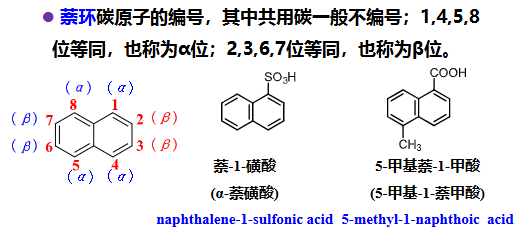
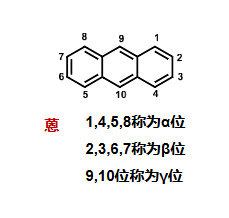
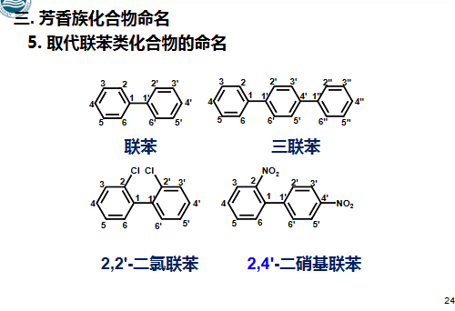
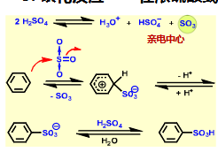
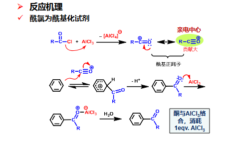
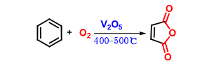
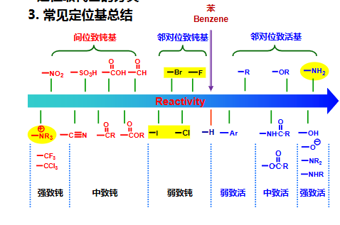
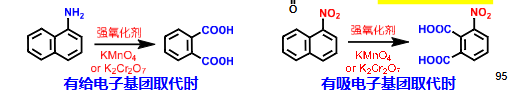
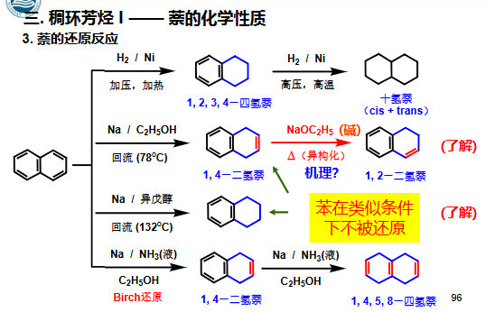
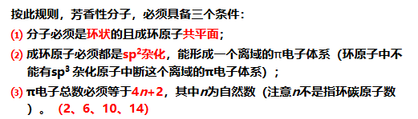

有机化学4 芳烃-1.pdf
有机化学4 芳烃-2.pdf
有机化学4 芳烃-3.pdf
芳香性 §
- 环状闭合共轭体系，π电子高度离域，具有离域能，体系能量低，较稳定；在化学性质上表现 为易进行亲电取代反应，不易进行加成反应和氧化反应，这种物理、化学性 质称为芳香性
- 芳香六隅体：π66 是离域的大π键，体系稳定 ，能量低，不易开环， 不易发生加成、氧化反应
芳香化合物分类 §
- 苯系（六元环）
- 单环
- 多环
- 多苯
- 联苯
- 稠环芳烃
- 杂环（有杂原子）
- 离子型
- 非苯系（多元环）
- 邻ortho，间meta，对para Ph上的位置关系
- 母体选择：
- 取代基是烷基、卤素、硝基等时，以苯为母体
- 取代基是氨基、醛基、羧基、酰胺基、羟基等官能团时，则以这 些官能团作为母体
- 当侧链较复杂或为不饱和基团时，把苯环作为取代基
- 苯基相关作为取代基
- 苯基：-Ph
- 苯甲基/苄基：-Bn
- 官能团优先次序：−COOH>−SO3H>−SO3NH2>−CO−O−CO−>−COOR>COX>−CONH2>−CN>−CHO>−CO−>−OH>−NH2>R−O−R>−R−S−R>C=C>C≡C>−R>−X>−NO2 −R,−X,−NO2只能作取代基
- 先使得母体为1，然后取代基按照顺序位次最低编号，再按照首字母写名字，和脂肪烃命名规则一致
- 三个相同取代基：
- 连：1，2，3
- 偏：1，2，4
- 均：1，3，5
- 稠环芳烃编号
- 萘：

上面α，两边β
- 蒽：

中间γ，两边上面α，两边旁边β
- 联苯：一个苯环是1~6，另一个就是1‘~6’，以此类推

化学性质分析 §

反应 §
- 亲电取代SE 取代
- 机理：

- 常见反应
- 和卤素：C6H6X2Fe或FeX3Ph−X 催化剂也可用Al代替，X=Br,Cl，引入F,I见重氮盐法 胺及杂环化合物
- 如果条件是hν，则上到Ph-R的R上，走自由基机理
- 硝化：C6H6con. HNO3,con. H2SO4ΔPh−NO2 硫酸作用是除水和催化硝酸产生NO2+作为E，如果Ph上有EDG且进一步提高温度则上更多硝基，比如制取TNT 控温
- 硝化后可用Fe,HCl还原，见芳香胺的还原 胺及杂环化合物
- 磺化：C6H6con. H2SO4ΔPh−SO3H 或者用发烟硫酸，不加热 控温 磺化反应的E为SO3，机理：

- 磺化后可水解，再次变成苯环，所以磺化可以用来占位
- Friedel-Crafts反应 人名反应：
- 烷基化：C6H6AlCl3R−XPh−R 此处AlCl3为Lewis酸，可以换成SnCl4,FeCl3,ZnCl2,TiCl4,BF3 机理：Lewis酸夺RX的X，生成R+，然后碳正离子重排稳定后作为E进攻苯环
- 同理，用烯烃和醇在质子酸的环境下也可生成碳正离子 控pH反应：C6H6HF0°CCH2=CHCH3Ph−CH(CH3)2 碳正离子生成在2’C C6H6H2SO4Me2CHOHPh−CHMe2 同上，都是酸给质子，然后形成碳正离子
- 如果Ph上连着强EWG或碱性基团，则不能发生F-C烷基化 控pH反应
- 酰基化：用酰氯或者酸酐，在Lewis酸催化下反应 C6H6AlCl3R−COCl或RCO−O−CO−RPh−CO−R 注意Lewis酸用量：用酰氯：>1equiv. 用酸酐：>2equiv.
- Ph连EWG同样不反应
- 机理：

解释了为什么有Lewis酸的用量要求
- Blanc反应 人名反应：本质类似F-C反应 C6H6ZnCl2HCHO,HClPh−CH2Cl 控pH反应
- 还原 还原：苯催化加热加氢得环己烷 控温
- 加成 加成：C6H63 equiv. Cl2,hνC6H6Cl6 666制剂
- 氧化 氧化：
- 苯氧化：C6H6O2,V2O5Δ顺丁烯二酸酐 即：

- 高锰酸钾氧化侧链Ph−R(R上有α-H)KMnO4Ph−COOH
- 侧链取代 取代：
- 直接卤素+光照，见上
- NBS上Br：Ph−CH2CH3NBS过氧化物Ph−CHBrCH3 有过氧化物，走自由基机理，所以Br上在-Bn位自由基，稳定性高
- 取代基影响
- 活性：活化基团和钝化基团
- 位置 立体选择性：邻对位(第一类)定位基和间位(第二类)定位基
- 活化一般是EDG/带负电且邻对位定位，钝化一般是EWG/带正电且间位定位（除卤素）

- 解释：诱导和共轭导致 -C 还有中间体稳定性
- 双取代基：两个定位位置一致则在同一位置；两个定位位置不一致则服从能力强的；两个不同类型的服从邻对位的；考虑位阻影响，比如邻对位如果邻位位阻大则上对位 立体选择性
- 稠环芳烃：
- 亲电取代 取代的位置：
- 电子效应：进攻α位（电子云密度高）；空间效应：进攻β位 决定因素
- 卤化和硝化都进攻α位
- 磺化受温度影响，低温动力学，进攻α位；高温热力学，进攻β位 控温
- F-C酰基化，低温非极性solvent，进攻α位；高温极性solvent，进攻β位（同上）
- 氧化 氧化：

- 有-R取代，萘环比-R容易被氧化
- 有EDG取代，被取代的环被氧化；有EWG取代，另一个环被氧化；二者均是开环被氧化成二羧酸

- 还原：

控温 人名反应
- 定位规律 立体选择性：
- 萘有邻对位定位基：E进攻同环α位，且为邻对位（原来α位，后来上到同环p-α位；原来β位，后来上到同环o-α位）
- 萘有间位定位基：E进攻异环α位
- 蒽一般在9/10位
- 蒽的中间环的共轭双键可以视作能发生D-A反应 人名反应
Huckel规则 §
- 判断单环化合物是否具有芳香性
- 含有 4n + 2 ( n = 0, 1, 2…..)个π电子的 单环的、平面的、封闭共轭多烯具有芳香性

- 环上的负离子，视作两个π电子
- 杂环化合物，furan,pyrrole,pyridine都有芳香性